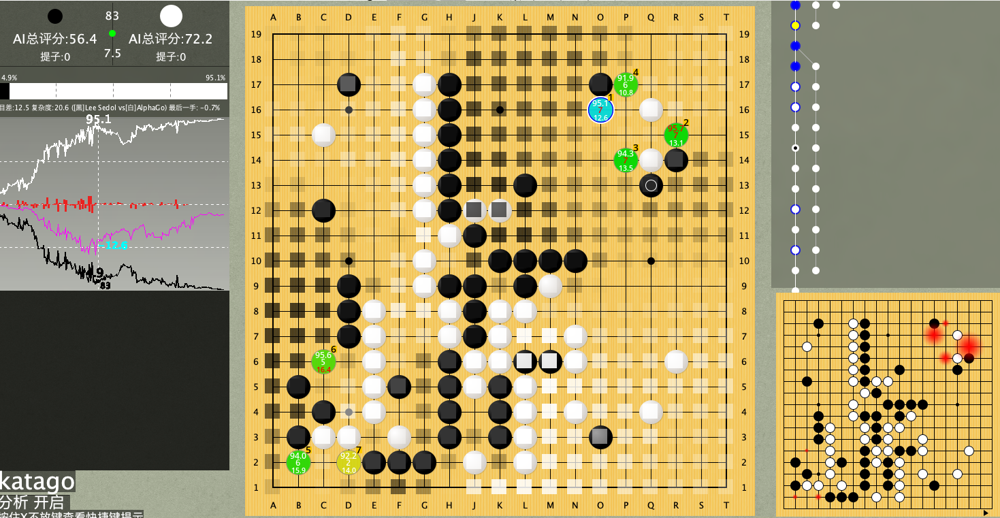

katago 围棋复盘手机版
随着alphago的发展，越来越多围棋爱好者选择使用围棋ai 进行复盘。包括但不限于leela katago。
而katago相比其他ai而言，更具有优势。例如 支持 让子、形势判断、不退让等等。
下面介绍如果在pc和手机上使用katago进行复盘与对弈
pc上使用

1 安装java环境
2 下载lizzie https://github.com/featurecat/lizzie/releases
或者下载lizzieyzy增强版本
3 下载katago 和权重 https://github.com/lightvector/KataGo/releases
mac 用户可以自行编译 或者 使用brew 安装
brew install katago
4 修改 config.txt 里 engine-command
C:\katago gtp -config C:\gtp.cfg -model C:\g170e-b20c256x2-s2430231552-d525879064.bin.gz
mac 用户大概如下
/usr/local/Cellar/katago/1.3.2/bin/katago gtp -config /usr/local/Cellar/katago/1.3.2/share/katago/configs/gtp_example.cfg -model /usr/local/Cellar/katago/1.3.2/share/katago/g170e-b15c192-s1672170752-d466197061.txt.gz
双击 lizzie即可运行。 初次运行需要等待较长时间
katago 手机版

- 支持远程复盘，使用自己的pc 自己的显卡，无需购买云算力。
- 操作简单，在手机端与电脑端登录账户即可；
- 复盘棋谱分享；
- 查看别人分享的棋谱；
- 本地记谱；
- katago
- 让子
- 多路棋盘
- 与ai对弈 且可选同等棋力
- ai形势判断
- 实时复盘
- 离线复盘
Support or Contact
手机版正在内测中。加群免费内测。正式版收费
qq群 331953595
加站长微信